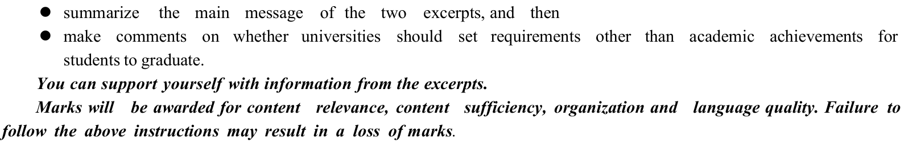
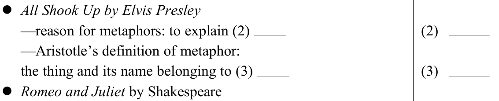
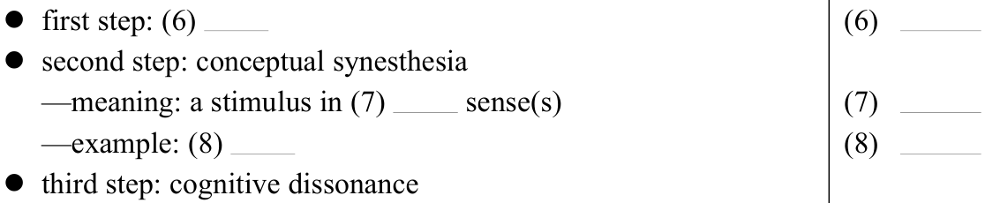
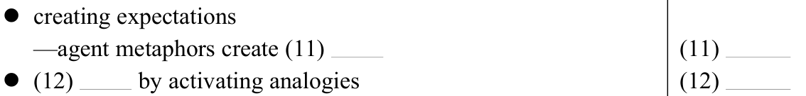

TEST FOR ENGLISH MAJORS (2023)
-GRADE EIGHT-
TIME LIMIT: 150 MIN
PART I LISTENING COMPREHENSION (25 MIN)
SECTION A MINI-LECTURE
In this section you will hear a mini-lecture. You will hear the mini-lecture ONCE ONLY. While listening to the mini-lecture, complete the gap-filling task on ANSWER SHEET ONE and write NO MORE THAN THREE WORDS for each gap. Make sure what you fill in is both grammatically and semantically acceptable. You may use the blank sheet for note-taking.
You have THIRTY seconds to preview the gap-filling task.
Now, listen to the mini-lecture. When it is over, you will be given THREE minutes to check your work.
SECTION B INTERVIEW
In this section you will hear ONE interview. The interview will be divided into TWO parts. At the end of each part, five questions will be asked about what was said. Both the interview and the questions will be spoken ONCE ONLY. After each question there will be a ten-second pause. During the pause, you should read the four choices of A, B, C and D, and mark the best answer to each question on ANSWER SHEET TWO.
You have THIRTY seconds to preview the choices.
Now, listen to Part One of the interview. Questions 1 to 5 are based on Part One of the interview
1.
2.
3.
4.
5.
Now, listen to Part Two of the interview. Questions 6 to 10 are based on Part Two of the interview.
6.
7.
8.
9.
10.
PART II READING COMPREHENSION (45 MIN)
SECTION A MULTIPLE CHOICE QUESTIONS
In this section there are three passages followed by fourteen multiple choice questions. For each multiple choice question, there are four suggested answers marked A, B, C and D. Choose the one that you think is the best answer and mark your answers on ANSWER SHEET TWO.
PASSAGE ONE
(1) New calls for Australia to introduce a sugar-sweetened beverages tax have sparked an outcry from the food and beverage industry and provoked resistance from politicians. But why do health experts keep calling for a sugar-sweetened beverages (SSB) tax, and why are politicians and industry resisting it?
(2) Sugar taxes vary in design around the world in 26 countries. In Mexico, a 10%tax on sugary drinks was introduced in 2014.When the tax starts in the UK in April, there will be two bands — one for sugar content above 5g per 100ml and a second, higher tax on drinks containing more than 8g of sugar per 100ml.
(3) In a 2018 statement on nutrition the Australian Medical Association(AMA)urged the government to introduce an SSB tax. This is significant because AMA is generally conservative when it comes to health policy and often avoids controversial debates. But it now wants a sugar tax “as a matter of priority”.
(4) The health minister has made it clear the government will not support it, saying food labelling laws and voluntary codes of conduct to restrict food marketing to children are adequate. A Labor MP also stopped short of supporting a tax, saying other strategies are needed to promote a healthy lifestyle. The Greens, led by former doctor Richard Di Natale, support the tax and have previously proposed a 20%increase to the price of sugary drinks.
(5) According to Prof. Tim Gill, from the Boden Institute of Obesity, Nutrition, Exercise &Eating Disorders in Sydney, the strength of an SSB tax is that it targets an easily defined product. “It’s easy to identify sugary drinks and their manufacturers, and you can tax them at their production,” he said. “There are a limited number of sugary drinks producers in Australia. A problem for governments collecting taxes can be how complicated it can be. If you were to try to tax every sugary food for example, that would be very complicated to do.”
(6) The government has previously used complexity as an argument against an SSB tax. “But now with the UK jumping on the bandwagon, which has a similar consumption culture to ours but with a larger population and more producers, that complexity argument doesn’t hold weight anymore,” Gill said.
(7) Bureau of Statistics data shows Australia is one of the 10 highest soft drink-consuming countries per capita. The World Health Organisation recommends adults consume no more than six teaspoons of sugar per day, but the average Australian consumes more than double that. A 330ml bottle of Coke contains nine teaspoons of sugar.
(8) A study published in the Journal of the Academy of Nutrition and Dietetics found sales of soft drinks in Melbourne’s Alfred hospital dropped 27.6%during a 17-week trial when the price of sugary drinks was increased by 20%. Bottled water sales increased by almost the same amount.
(9) An analysis of sugary-drink purchases in Mexico conducted two years after the tax was introduced found a
5.5% drop in the first year, followed by a 9.7%decline in the second. While two years is not enough to determine
the long-term impact on health, the study found: “These reductions in consumption could have positive impacts on health outcomes and reductions in healthcare expenses.”
(10) Sugar-sweetened drinks and sugar generally have been associated with obesity, type 2 diabetes, cardiovascular disease, tooth decay and bone density problems. The Australian Healthcare and Hospitals Association says obesity is the leading cause of preventable death or illness in Australia — above smoking. But it will take longer term analysis to see clear evidence of any impact of a tax on obesity levels.
(11) Lobby groups from the food and beverage industry are powerful. The Australian Beverages Council, the industry’s lobby group, has been fighting against a tax for years. It says there is no evidence a tax will do anything to reduce obesity, and it will cost jobs, which is a frightening message for politicians. The Australasian Association of Convenience Stores (AACS)described the introduction of an SSB tax in the UK as “lazy,” “flawed,” “discriminatory” and “irrational”. It has ramped up its campaign to prevent such a tax in Australia.
(12) Would introducing a sugar tax make Australia a nanny-state? It depends on whether you believe the food and beverage industry has too much power. Health experts argue that through advertising, product placement and political influence, the food and beverage industry has an unfair and non-transparent influence over consumer purchasing habits, and that children especially are sometimes powerless to recognise or resist it. They say an SSB tax would hold the industry to account. Others argue people need to take personal responsibility.
(13) A Deakin University study used economic modelling to show the increase in annual spending on sugar-sweetened drinks under a 20%tax would average $30 a person, but those in the lowest socioeconomic groups would pay $5 a year more than those in the wealthiest groups.
(14) Researchers concluded this was a modest price to pay given the benefits — and that Australia’s lowest socioeconomic group would receive the greatest health benefits. Health experts and advocacy groups say governments could reduce the financial burden on disadvantaged people by using revenue from a tax to fund health initiatives.
11.What is the Australian government’s response to the SSB tax?
12.Which of the following organisations is opposed to the SSB tax?
13.What is the author’s attitude towards the SSB tax according to Para.12?
14.What is argued about the SSB tax in Paras.13 and 14?
PASSAGE TWO
(1) I’d been living in Los Angeles just under a year when, in the spring of 1983, I answered an ad in the Hollywood Reporter for a receptionist and got the job. The pay wasn’t much, but the work was in “the Business” — an apt Los Angeles euphemism for the entertainment industry. The location was within bicycling distance of my home, and they only wanted someone to work mornings. I’d get off by 1 p.m., which I thought would leave me plenty of time to do my own writing. I was wrong about that. The place was so frantic I’d come out wired and need the rest of the day to simply calm down. When, after about two weeks, I realized my afternoons were being spent in activities equivalent to running around the block twenty or thirty times, I asked to be put on full-time. Since I wasn’t getting anything else, why not, I figured, jump in for the total experience
(2) The (still thriving) company I found myself a part of possessed the unlikely name of Breakdown Services, Ltd. During the six months I worked there, I learned to savor all of that phrase’s more cynical reverberations, but in terms of the job it dealt with the dismantling or breakdown of television and film scripts. Scripts gathered from producers or studios would be regurgitated (回流) by Breakdown in the form of plot summaries, character descriptions, number of scenes per character, and the number of dialogue lines each speaks. These compilations were then xeroxed and distributed to hundreds of subscribing actors’ agents who proceeded to submit their clients for likely parts. It was a process, as I was to discover by way of angry phone calls when “breakdowns” arrived late or not at all, that the agents regarded with a reverence others might reserve for morning prayer.
(3) Breakdown Services, Ltd. was the brainchild of a young man named Gary Marsh. Gary was twenty- eight when I met him, but he’d founded Breakdown when he was eighteen and was considered something of an entrepreneurial prodigy. His mother was an agent and he’d observed the piles of scripts she and her agent pals had to plow through in order to match a given role with the talent they represented. He’d also observed how much they hated the reading part of their jobs and had cleverly devised breakdowns as a way of extracting the material they needed.
(4) By the time I arrived, five full-time breakdown writers worked in a desk-lined back room overlooking a parking lot. I’ve heard the current crew has now advanced to computers, but when I was there typewriters were the norm. When they weren’t typing, the writers would curl up on the office’s worn stuffed couch and, with a script propped against one arm, fill legal-sized yellow pads with dialogue line numbers and comments which they’d then type up. It could be a complex job. For example, the breakdown for a film originally called Teenage Gambler lists over forty characters, ranging from the teenaged gambling leader to five waiters who sing “Happy Birthday” at a surprise party.
(5) Perhaps because of the patience involved in this sort of extraction, women seemed to dominate the ranks of the break-downers (during my tenure the ratio was four to one). Although Gary knew I’d done a bit of writing, I was relegated to the front office and never received an invitation to try my hand at breakdowns. It wasn’t something I really wanted to do. For one thing, the writers were a youthful bunch. The back room senior was in her early thirties, but none of the others had hit twenty-five. And I think Gary rightly surmised I’d be too openly cynical for the job or try to embellish too much. Breakdowns were produced anonymously and offered no artistic evaluations of the scripts. The writers might talk among themselves about a piece they felt was particularly good or bad, but such editorializing was not allowed to make its way into the final product. That this restriction was frustrating is indicated by the fact that two of the writers began venting opinions as moonlighting theater critics for small local papers.
(6) For Gary, the most problematical aspect of the breakdown business was its limited market. This had nothing to do with his operating methodology; he did what he could to exploit the possibilities. Each weekday a hardy crew made predawn deliveries of breakdowns to agents’ homes or offices, while a post-dawn quartet of pager-equipped Breakdown field workers haunted the big studios ready to pounce on an available script. For these studio prowlers speed was of the essence, not only because Hollywood tends to be crisis-prone and wants everything done quickly, but because a rival, spawned by the success of Breakdown Services, Ltd. and infuriatingly named BreakThrough Productions, Ltd., was also on the hunt.
(7) Breakdown Services unquestionably dominated the field, but the field itself had immutable perimeters. Breakdown’s subscribers had to be accredited agents, though there were some exceptions to this rule. For instance, specialized media organizations, such as the competitive, vulture-like companies that insured movie productions, could keep tabs on the industry by subscribing to the weekly Breakdown summaries. But the whole Breakdown operation was hard to monitor. When I was there, a Breakdown subscription was expensive, something like $500 a year. And though breakdowns were copyrighted and unauthorized reproduction was clearly prohibited, xerox machines are notoriously bad at picking up such distinctions and among the larger agencies breakdowns were undoubtedly duplicated and passed around.
(8) Gary’s response to these built-in economic dilemmas was to diversify. A separate department for commercials, for example, appeared as part of the Breakdown menu. Although Breakdown staffers were supposed to refrain from giving tips to potential talent, I did once tell a friend — who hoped to finance the college educations of her five-year-old identical twins by getting them on a commercial — that a juice company had put out a call for identical twin girls. Their agent submitted them, but they didn’t get the job. The nightly Breakdown delivery system expanded to an all-day messenger service. Gary also made available an assortment of directories and mailing labels listing casting directors, talent agents, and literary agents in Los Angeles and New York. The current Breakdown brochure adds yet another Breakdown amenity; for fifteen dollars you can receive an “actors’ relaxation” cassette tape “designed to maximize your abilities and stimulate your creative senses”.
15.Which of the following is NOT a reason for the author to take the job?
16.What is the agents’ attitude towards “breakdowns”?
17.What does “such editorializing” in Para.5 mean according to the context?
18.What problem does the author mainly talk about in Para.7?
19.What is the author’s tone throughout the passage?
PASSAGE THREE
(1) It was delightful to be in such a place, after long weeks of daily and nightly familiarity with miners’ cabins — with all which this implies of dirt floor, never-made beds, tin plates and cups, bacon and beans and black coffee, and nothing of ornament but war pictures from the Eastern illustrated papers tacked to the log walls. That was all hard, cheerless, materialistic desolation, but here was a nest which had aspects to rest the tired eyes and refresh that something in one’s nature which, after long fasting, recognizes, when confronted by the belongings of art, howsoever cheap and modest they may be, that it has unconsciously been famishing and now has found nourishment.
(2) I could not have believed that a rag carpet could feast me so, and so content me; or that there could be such solace to the soul in wall-paper and framed lithographs (平版印刷画), and bright-colored tidies and lamp- mats, and Windsor chairs, and varnished whatnots (陈设架), with sea-shells and books and china vases on them, and the score of little unclassifiable tricks and touches that a woman’s hand distributes about a home, which one sees without knowing he sees them, yet would miss in a moment if they were taken away. The delight that was in my heart showed in my face, and the man saw it and was pleased; saw it so plainly that he answered it as if it had been spoken.
(3) “All her work,” he said, caressingly; “she did it all herself — every bit,” and he took the room in with a glance which was full of affectionate worship. One of those soft Japanese fabrics with which women drape with careful negligence the upper part of a picture-frame was out of adjustment. He noticed it, and rearranged it with cautious pains, stepping back several times to gauge the effect before he got it to suit him. Then he gave it a light finishing pat or two with his hand, and said: “She always does that. You can’t tell just what it lacks, but it does lack something until you’ve done that — you can see it yourself after it’s done, but that is all you know; you can’t find out the law of it. It’s like the finishing pats a mother gives the child’s hair after she’s got it combed and brushed, I reckon. I’ve seen her fix all these things so much that I can do them all just her way, though I don’t know the law of any of them. But she knows the law. She knows the why and the how both; but I don’t know the why; I only know the how.”
(4) He took me into a bedroom so that I might wash my hands; such a bedroom as I had not seen for years: white counterpane, white pillows, carpeted floor, papered walls, pictures, dressing-table, with mirror and pin-cushion and dainty toilet things; and in the corner a wash-stand, with real china-ware bowl and pitcher, and with soap in a china dish, and on a rack more than a dozen towels — towels too clean and white for one out of practice to use without some vague sense of profanation. So my face spoke again, and he answered with gratified words: “All her work; she did it all herself — every bit. Nothing here that hasn’t felt the touch of her hand. Now you would think — But I mustn’t talk so much.”
(5) By this time I was wiping my hands and glancing from detail to detail of the room’s belongings, as one is apt to do when he is in a new place, where everything he sees is a comfort to his eye and his spirit; and I became conscious, in one of those unaccountable ways, you know, that there was something there somewhere that the man wanted me to discover for myself. I knew it perfectly, and I knew he was trying to help me by furtive indications with his eye, so I tried hard to get on the right track, being eager to gratify him. I failed several times, as I could see 5
out of the corner of my eye without being told; but at last I knew I must be looking straight at the thing — knew it from the pleasure issuing in invisible waves from him. He broke into a happy laugh, and rubbed his hands together, and cried out: “That’s it! You’ve found it. I knew you would. It’s her picture.”
(6)I went to the little black-walnut bracket on the farther wall, and did find there what I had not yet noticed — a picture case. It contained the sweetest girlish face, and the most beautiful, as it seemed to me, that I had ever seen. The man drank the admiration from my face, and was fully satisfied.
(7) “Nineteen her last birthday,” he said, as he put the picture back; “and that was the day we were married. When you see her — ah, just wait till you see her!”
(8) “Where is she? When will she be in?”
(9) “Oh, she’s away now. She’s gone to see her people. They live forty or fifty miles from here. She’s been gone two weeks today.”
(10) “When do you expect her back?”
(11) “This is Wednesday. She’ll be back Saturday, in the evening — about nine o’clock, likely.”
(12) I felt a sharp sense of disappointment.
(13) “I’m sorry, because I’ll be gone then,” I said, regretfully.
(14) “Gone? No — why should you go? Don’t go. She’ll be disappointed.”
(15) She would be disappointed — that beautiful creature! If she had said the words herself, they could hardly have blessed me more. I was feeling a deep, strong longing to see her — a longing so supplicating, so insistent, that it made me afraid. I said to myself: “I will go straight away from this place, for my peace of mind’s sake.”
(16) “You see, she likes to have people come and stop with us — people who know things, and can talk — people like you. She delights in it; for she knows — oh, she knows nearly everything herself, and can talk, oh, like a bird — and the books she reads, why, you would be astonished. Don’t go; it’s only a little while, you know, and she’ll be so disappointed.”
(17) I heard the words, but hardly noticed them, I was so deep in my thinkings and strugglings. He left me, but I didn’t know. Presently he was back, with the picture case in his hand, and he held it open before me and said: “There, now, tell her to her face you could have stayed to see her, and you wouldn’t.”
20. The author makes the impression in Paras.1 and 2 by means of .
21.Which of the following words BEST describes the man’s feelings about his wife?
22.From the description of the man readjusting the fabric over the picture-frame, we can learn that he .
23.What made the author feel afraid in Para.15?
24.From the man’s narration, we know that his wife is all of the following EXCEPT .
SECTION B SHORT ANSWER QUESTIONS
In this section there are eight short answer questions based on the passages in Section A. Answer each question in NO MORE THAN TEN WORDS in the space provided on ANSWER SHEET TWO.
PASSAGE ONE
25.What does Prof. Tim Gill think of an SSB tax according to Para.5?
26.What can be summarized from the study results in Para.8?
27.Summarize the AACS’s comments on the SSB tax (Para.11) in your own words.
本页部分文字层异常，已保留原图文字区域；这些区域随窗口缩放，暂不能重新换行或复制。
PASSAGE TWO
28.What does the italicized part in Para.1 imply about the author’s work?
29.Which word or phrase in Para.7 has the same meaning as “limited market” in
Para.6? 30.Use THREE adjectives to describe Gary Marsh as a businessman.
PASSAGE THREE
31.What does the italicized part in Para.4 imply about the man’s wife?
32.What does the italicized phrase “get on the right track” in Para.5 mean?
PART III LANGUAGE USAGE (15 MIN)
The passage contains TEN errors. Each indicated line contains a maximum of ONE error. In each case, only ONE word is involved. You should proofread the passage and correct it in the following way:
For a wrong word, underline the wrong word and write the correct one in the blank provided at the end of the line. For a missing word, mark the position of the missing word with a “/\” sign and write the word you believe to be missing in the blank provided at the end of the line. For an unnecessary word, cross the unnecessary word with a slash “/” and put the word in the blank provided at the end of the line.
EXAMPLE When /\ art museum wants a new exhibit, (1) an it never buys things in finished form and hangs (2) never them on the wall. When a natural history museum wants an exhibition, it must often build it. (3) exhibit
PART IV TRANSLATION (20 MIN)
Translate the underlined part of the following text from Chinese into English. Write your translation on ANSWER SHEET THREE.
中国传统文化是我们先辈传承下来的丰厚遗产。 她无时无刻不在影响着今天的中国人，为我们开创新文化提供历史根据和现实基础。传统文化在影响现实的同时，也必然在新时代的氛围中发生蜕变。中国传统文化犹如一条奔腾了五千年的永不干涸的大河，她亦旧亦新，不断吐故纳新，持续创新。
PART V WRITING (45 MIN)
Read carefully the following two excerpts on swimming requirements for university students, and then write your response in NO LESS THAN 300 WORDS, in which you should:

Write your response on ANSWER SHEET Four.
Excerpt 1 Sink or swim tied to bachelor’s degrees — literally
Students aiming to enter one of the top universities in China this year had better be able to swim or be prepared to learn swimming and pass a swim test since this university will not grant bachelor’s degrees if they cannot swim.
This September, would-be freshmen at the university will have to take swimming courses if they fail a swimming test at the beginning of their university life. And they won’t receive their degrees if they cannot swim before their graduation, in accordance with a message at a university staff meeting days ago, a local newspaper reported on Monday.
As to why the university is linking swimming ability with degrees, “as a requisite survival skill, swimming is beneficial for students in the long run, since swimming is helpful in improving students’ endurance and doing less harm to joints and muscles as a water sport,” said head of the Division of Sports Science and Physical Education
Viewing the ability to swim as a must for students to earn their degrees is not new in this top university, as this ability was listed on its school regulations in the early 20th century.
“As early as 90 years ago, the university required that students cannot graduate from the university or study overseas if they cannot swim, though the requirement didn’t work later on since the swimming pools at the campus could not accommodate increasingly more students,” said the head of the Sports Science and Physical Education Division.
Many alumni of this university had to meet the swimming challenge. The university is not the first university to require swimming as a compulsory course. Other universities in China have also listed swimming as a compulsory course for students.
Excerpt 2 University of Chicago nixes nearly 60-year-old swim requirements
For almost 60 years, one of the first things new students had to prove at the University of Chicago was their ability to stay afloat.
But students in the Class of 2016 wouldn’t have to pass a swim test or take a swimming course in their freshman year. The University of Chicago has joined other universities in nixing the requirement.
A handful of universities still require swimming tests to graduate, a dramatic shift considering that in 1977, 42 percent of colleges had some sort of swimming requirement, the Associated Press reported in 2006.By 1982 that figure had plummeted to 8 percent, and today, there are just a handful.
Three Ivy League colleges — Columbia and Cornell universities and Dartmouth College — still require their students to pass a swim test before graduation. So do Washington and Lee University in Virginia, and Massachusetts Institute of Technology.
Jeremy Manier, a university spokesman, said the reason for the change was to give students options in how they choose to exercise. To facilitate that model, the Fit Chicago program — which used to cost students $4 to $5 a class — is now free.
Many University of Chicago students agree with the change, including Jim Foster, who is the student government’s vice president for student affairs. In his opinion, the swim test was outdated.
“There’s that fringe sect of universities that say it’s a valuable life skill, but then again, so is self- defense,” Foster said. “So I think it’s a smart decision to really leave it up to the students to decide when, if at all, they would like to take the time to learn that skill.”
The “diverse needs” of University of Chicago’s campus is one of the reasons Karen Coleman, Vice President of Campus Life, cited for nixing the swim tests in a letter to students. “Ending (these requirements) will give us more opportunities to provide desired athletic and fitness options and give students more flexibility in how and when they engage in fitness, recreation or athletic activities,” Coleman wrote.
本页部分文字层异常，已保留原图文字区域；这些区域随窗口缩放，暂不能重新换行或复制。
ANSWER SHEET 1
PART I LISTENING COMPREHENSION
SECTION A MINI-LECTURE
Metaphors in Speaking Definition Metaphor: a way of (1) before a way of words (1) Examples of metaphors

—result of using metaphors creating (4) (4) providing (5) (5) Understanding of metaphors

—hard to ignore (9) of words (9) —even harder to reject (10) (10) Significance of metaphors

—three descriptive analogies —WWII analogy triggering more (13) (13) —solving problems by comparing(14) things (14) Metaphor is (15) yet hidden. (15)
ANSWER SHEET 3
PART III LANGUAGE USAGE
What Bilingualism Is NOT
I have had the chance to live and work for extended periods of time in at least three countries, the United States, Switzerland, and also France, and as a researcher on bilingualism, has allowed me to learn a lot about my topic (1) of interest. I have found that people there share many misconceptions about bilingualism and bilinguals. However, they also seem to have very country-specific attitudes towards it. (2)
Among shared misunderstandings, one is that bilingualism is a rather uncommon phenomenon. And in fact, it has been estimated that more than (3) 50% world population is bilingual, and uses two or more languages in the (4) everyday life. Bilingualism is found in all parts of the world, at all levels of society, and in all age groups.
Another misconception is that bilinguals have equitable knowledge of (5) their languages. In fact, bilinguals know their languages to the level that they need them and many are dominant at just one of them. (6)
There are also the myths that real bilinguals do not have an accent in their different languages and that they are excellent all-around translators. This is far from true. Having an accent or not does not make one more or (7) less bilingual, and bilinguals often have difficulties translating specialized language.
Then there is the misconception all bilinguals are bicultural and that (8) they have double personalities.
As concerning children, many worries and misconceptions are also (9) widespread. The first is that bilingualism will suspend language acquisition (10) in young children. This was a popular myth in the first part of the last century, but there is no research evidence to that effect.
2023年英语专业八级真题补充卷
说明：本次考试全国出现了两套试题，其中听力、阅读、翻译和写作题目相同，仅改错题不同，现将改错题补充如下：
PART III LANGUAGE USAGE
Multilingualism
Multilingualism is the natural potential available to every normal human being rather than an unusual exception. It need not require the ability to speak two unrelated languages; a user of the literacy and a dialectal variety is already multicompetent. In the (1) meantime, multicompetence does not require perfect fluency in all the languages in one’s command; thus, setting the boundary would (2) probably be a mission incomplete. (3)
The advantages that multilinguals exhibit over monolinguals are not restricted to linguistic knowledge only, and extend outside (4) the area of language. Children and older persons learning foreign languages demonstrate a keener awareness and a sharp perception (5) of language, are more efficient communicators in their mother tongue, and have a better ear for listening and longer memories.
A person who speaks multiple languages has a stereoscopic vision of the world from two or more perceptions, thus becoming (6) more flexible in their thinking, and learning to read more easily. Multilinguals, however, are not restricted to a single worldview, (7) but also have a better understanding that other outlooks are possible. Indeed, this has always seen as one of the main (8) educational advantages of language learning. Multilinguals can expand their personal horizons and — being simultaneously insiders or outsiders — see their own culture from a new angle (9) that is unavailable to monolinguals, and enabling the comparison, (10) contrast, and understanding of cultural concepts.